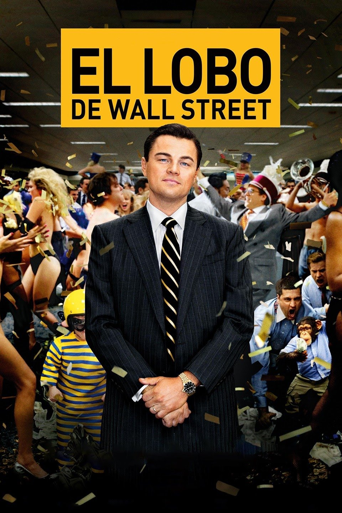

| 
|
- Estreno: 17 de enero de 2014
- Géneros: drama/comedia negra
- Duración: 3 horas
| Además la película cuenta con un reparto de ensueño teniendo de protagonista al mismísimo Leonardo DiCaprio,
nominado en tres ocasiones por la Academia de Hollywood, representando a Jordan Belfort,
y a otros grandes actores como Margot Robbie yJonah Hil
|
| Basada en un hecho real, EL LOBO DE WALL STREET cuenta el inverosímil auge y
la continua caída al reino del placer de Jordan Belfort , el corredor de bolsa neoyorquino que
, junto a sus alegres colegas, amasaron una descomunal fortuna estafando millones de dólares a
inversores. La película sigue la alucinante transformación de Jordan Belfort, desde que era un hombre honrado
recién llegado a Wall Street hasta convertirse en un auténtico forajido de las acciones. Después de amasar una enorme
fortuna en un tiempo récord, Jordan se la gasta de la forma más absurda en mujeres, tranquilizantes, cocaína, coches,
su esposa (una supermodelo) y un deseo ilimitado de poseerlo todo. Mientras su empresa, Stratton Oakmont, alcanza la cima y
él se entrega a los placeres más hedonistas, la SEC (Comisión de Títulos y Bolsa) y el FBI se acercan a su imperio de excesos.En esta película el
director Martin Scorsese trata el dramático terreno del delito en Estados Unidos desde múltiples ángulos, pero con EL LOBO DE WALL STREET se
asoma al abismo sumiéndose en el mundo de la variedad delictiva más contemporánea: las altas finanzas. El resultado es un viaje épico al corazón
de la embriaguez producida por la codicia,la adrenalina, el sexo, las drogas y la producción constante de dinero fácil.
|
| |